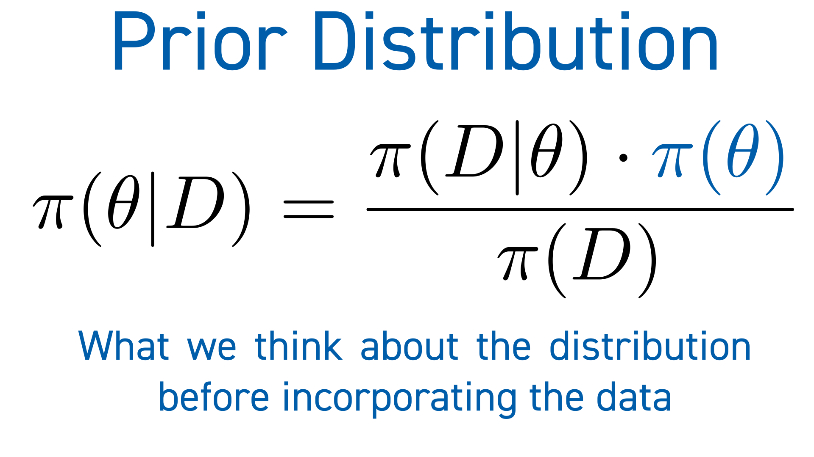
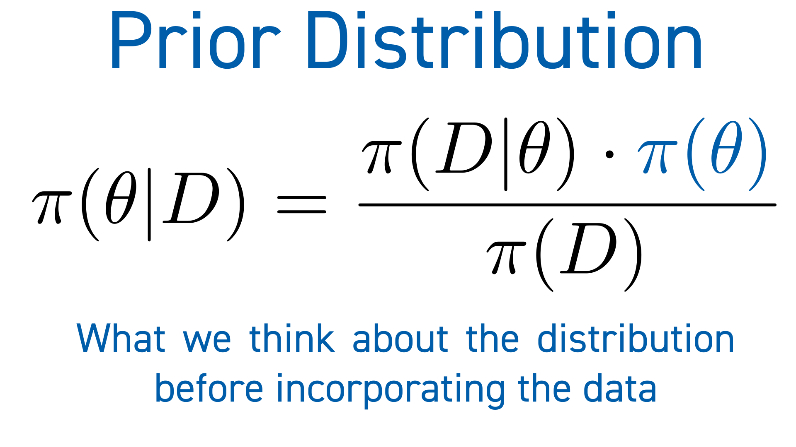

Computationally efficient methods for uncertainty quantification in seismic inversion

Georgia K. Stuart
The Department of Mathematical SciencesThe University of Texas at Dallas
28 September 2020
Outline

Exploration Seismology
Full Waveform Inversion (FWI)
Uncertainty Quantification and FWI


Bayes' Rule

 



Markov chain Monte Carlo (MCMC)
The Problem with MCMC
How can we reduce the computational cost of MCMC methods for FWI?
Strategies
Two-Stage MCMC
Choice of Filters
Operator Upscaling
Numerical Experiment: Two-stage MCMC with Upscaling
Numerical Experiment: Two-stage MCMC with Upscaling
Numerical Experiment: Two-stage MCMC with Upscaling
Neural Network Filter
Numerical Experiment: Two-stage MCMC with Neural Net
Numerical Experiment: Two-stage MCMC with Neural Net
The random walk sampler practically limits the number of unknowns we can use
Hamiltonian Monte Carlo (HMC)
Hamilton's Equations
HMC Flowchart
Problem: Gradient Computation is Expensive!
Two-Stage Hamiltonian Monte Carlo
Neural Network-Enhanced Two-Stage HMC (NNHMC)
Numerical Experiments: NNHMC
Numerical Experiments: NNHMC
Numerical Experiments: NNHMC
HMC requires user-specified parameters to discretize the hamiltonian dynamics
The No-U-Turn Sampler (NUTS)
The No-U-Turn Sampler
The No-U-Turn Sampler
The No-U-Turn Sampler
Conclusions
Future Work
Acknowledgements